1 BAHAN SEGAR PILIHAN
Bahan seafood pilihan
yang di jaga kesegaranya
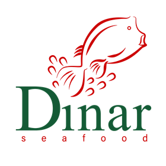
(+62) 012-3456-7890Sejak 2002, sebuah perjalanan rasa dimulai.
Dinar Seafood hadir dari kecintaan terhadap hasil laut dan kekayaan cita rasa Makassar. Selama lebih dari dua dekade, kami menjaga kesegaran bahan dan karakter bumbu khas yang menjadi identitas setiap hidangan.
Bagi kami, setiap sajian bukan sekadar makanan, melainkan bagian dari cerita yang dinikmati bersama di tengah keluarga, sahabat, dan orang-orang terdekat.
Sajian Khas Dinar Seafood
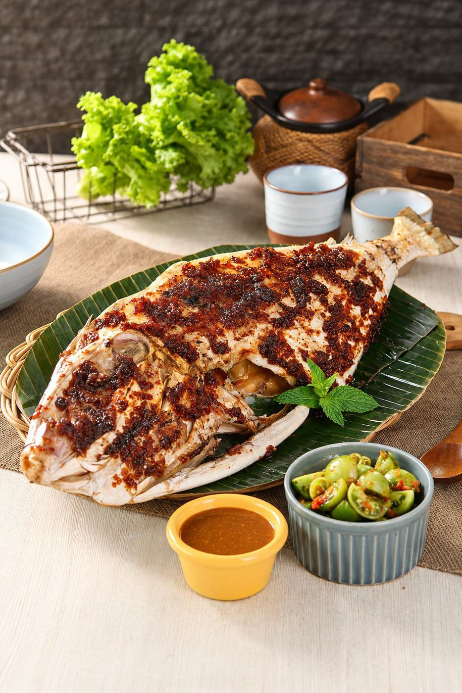
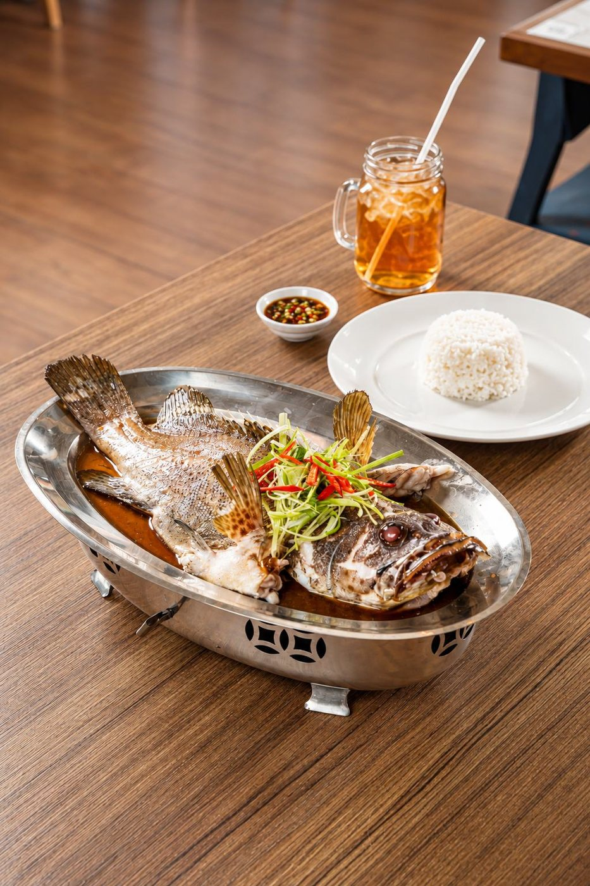
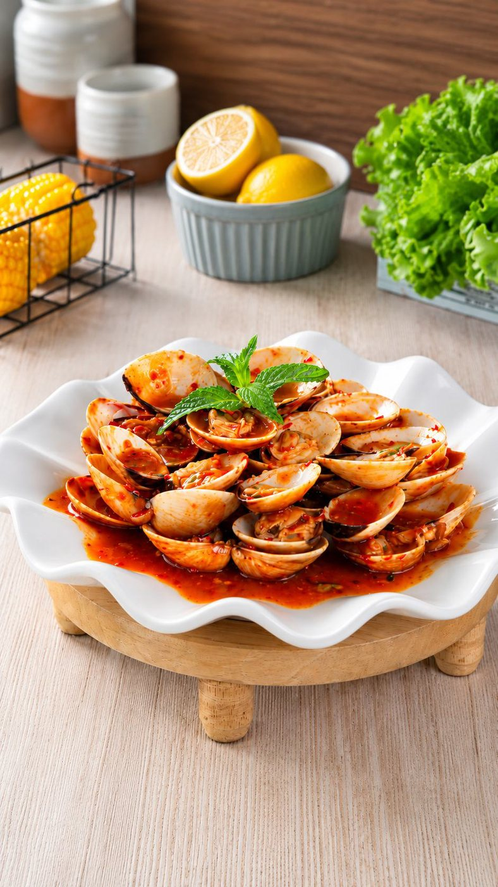
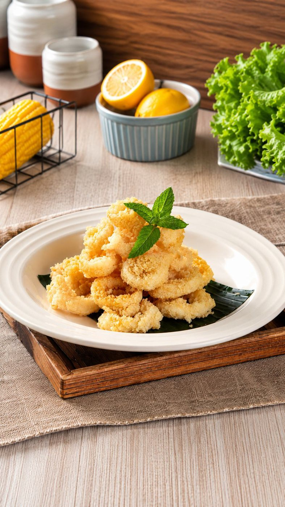
Bahan seafood pilihan
yang di jaga kesegaranya
Cita rasa yang menjadi
karakter Dinar Seafood
Proses pengolahan dengan
standar kebersihan yang terjaga
Cocok untuk keluarga, gathering,
maupun makan bersama
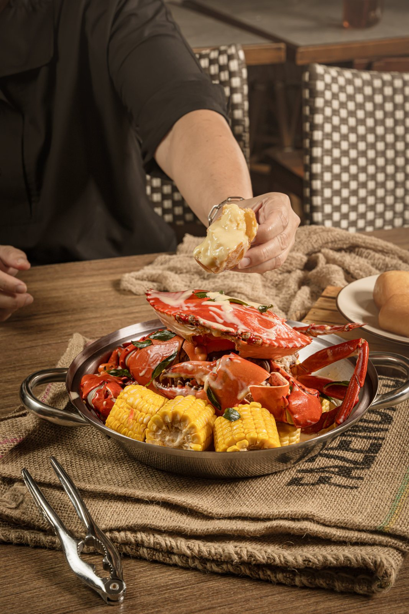
Dapatkan
+ GRATIS ONGKIR
DENGAN KODE KUPON
Berlaku untuk pemesanan mulai dari Rp 250.000 pada periode 13-17 September, kupon tidak berlaku kelipatan.
Sajian Dinar Seafood

Rp 22.000/ons
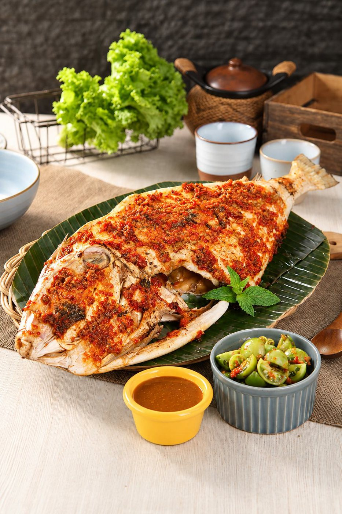
Rp 22.000/ons
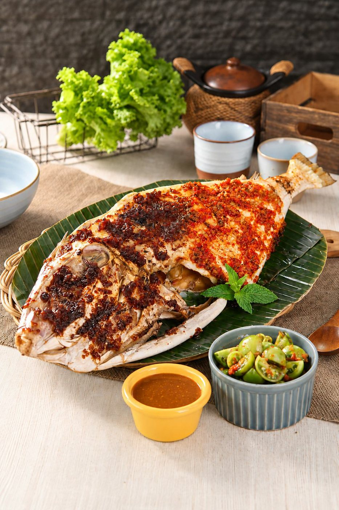
Rp 22.000/ons
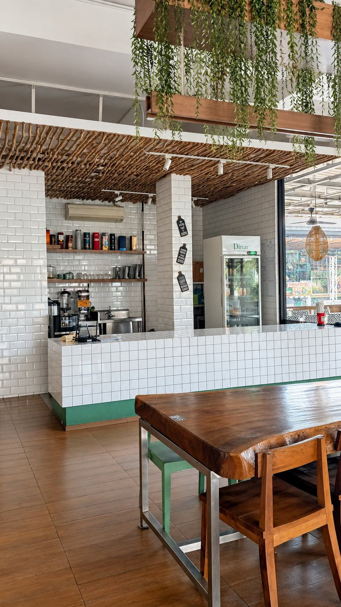
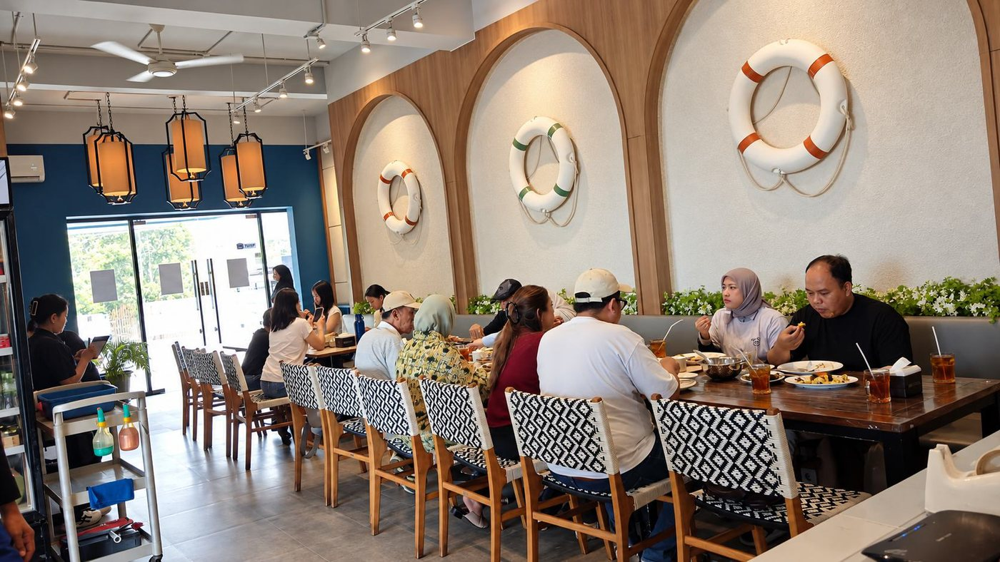
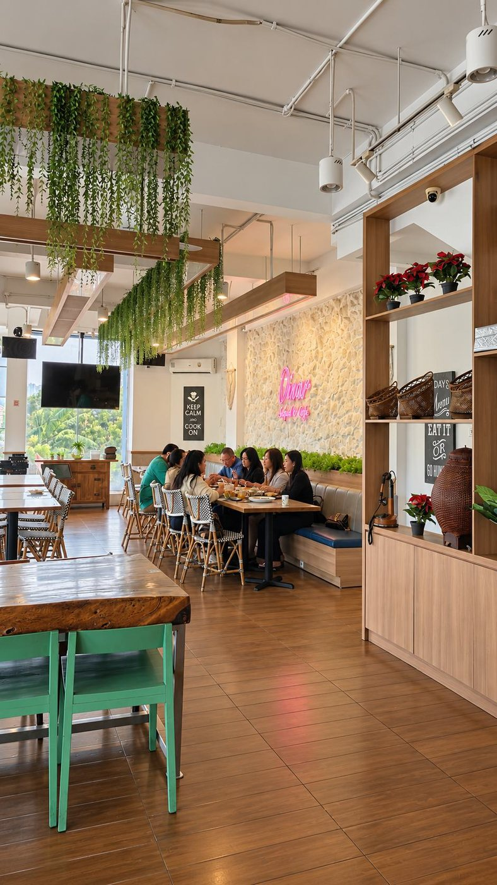
“Tempatnya habis renovasi jadi tetap relevan. Tempatnya bagus, bagian outdoornya jg langsung view danau jadi nyaman. Makanannya enak bumbunya mantap terutama sukang parape nya ikonik bgt. Serving makanannya juga tergolong cepat. Tempat makan luas bisa buat keluarga.”
“My comfort restoooo, kalo bingung makan apa ujung2nya reservasi dinar. Mba2 nya fast resp di whatsapp tinggal wa book trus datang makan. Gatau knp restonya rada sepi underrated padahal makanannya enak2 bgt weh.”
“Really like their Grilled Fish with Parape sauce. The fish meat just fell off the bone, like eating ribs. Their Parape sauce is not too spicy but very flavorful. They also provide Sambal Dabu for free, too bad the composition between shallot and tomato is not balanced. If they could add more shallot, that will be perfect.”
“Baru pertama kali nyoba makan disini, ternyata tempatnya bagus terutama suasana area outdoornya sangat adem anginnya. Menu makanan yg kebetulan dipesan antara lain gulai kepala kakap, kepiting soka lada garam, cumi goreng garing, kerang kepa saus padang, kangkung bwg putih, pare orak arik, nasi goreng seafood.”
Jl. Pluit Indah Raya No. 168 A Pluit, Penjaringan, Jakarta Utara
10.00-22.00 WIB
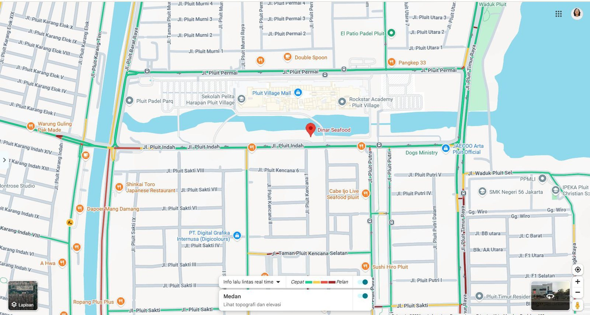